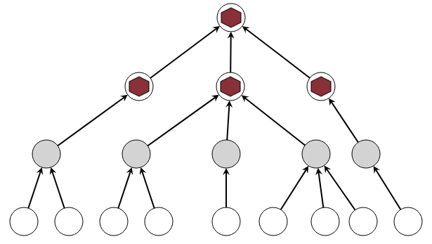
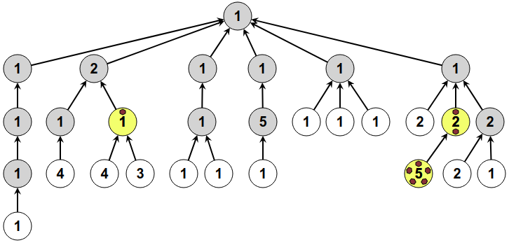
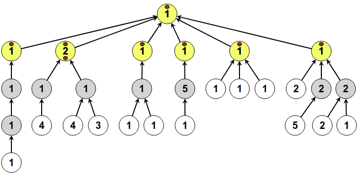

الحل
نبدأ بملء الجزء الأيسر بدءًا من الأسفل.

يمكننا بعد ذلك استعادة الحجرين بالأسفل ، لملء الجزء الأيمن.

يمكننا الحصول على الحجرين مرة أخرى من أسفل ، ووضع حجر في الأعلى.

علينا أن نبدأ بملء الدوائر الثلاث التي تشير إلى نفس الدائرة. في الواقع ، لدينا فقط 4 أحجار في المجموع ، لذلك إذا لم نبدأ هناك فلن نتمكن من القيام بها لاحقًا.

بعد ذلك ، يتعين علينا أن نفعل كل شيء حتى نتمكن من ملء الدائرة بأقل ما يمكن أسفل الدائرة الموجودة أعلى الصفحة ، لأن هذه الدائرة يشار إليها أيضًا بثلاثة أسهم. لذلك نحن نركز على الجزء المركزي. عليك أن تضع الأحجار في اليسار ، لأن ذلك يتطلب استخدام الحجارة الثلاثة المتبقية.

يمكننا بعد ذلك إنهاء الجزء المركزي.

ثم ، يمكنك جمع 3 أحجار والانتهاء بسهولة ، بدءًا من اليسار.

لتتمكن من وضع الأحجار على الدائرة الصفراء أدناه مع الرقم 1 ، يجب أن يكون لديك 8 حصى. نظرًا لأن لدينا 8 أحجار فقط ، يجب أن نبدأ هناك في البداية.

يمكننا بعد ذلك استعادة 7 أحجار. يجب علينا بعد ذلك التعامل مع المكان المحدد باللون الأصفر أدناه ، والذي نحتاج أيضًا إلى 7 أحجار.

وبالمثل ، نحن مضطرون في الأعلى إلى استخدام 7 أحجار

يمكننا بعد ذلك جمع 6 أحجار واستخدامها للجزء الذي يتطلب 6 أحجار بالضبط.

نجمع 5 أحجار، ونستخدمها للجزء الذي يتطلب بالضبط 5 أحجار

نجمع 4 أحجار، ونستخدمها للجزء الذي يتطلب 4 أحجار بالضبط.

مع وجود حجرين المتبقيتين ، يمكننا الانتهاء.

انها المعلوماتية !
يعرض هذا الموضوع هيئة بنية منظمة في شجرة ، متخيلًا الشجرة مرسومة رأسًا على عقب. الجذر في الأعلى ، و أوراق الشجره في الأسفل. في الوسط ، توجد التفريعات مع فروع ممثلة بالأسهم. هياكل الشجرة مفيدة للغاية في علوم الكمبيوتر.
إن المشكلة التي تطرح على هذه الشجرة مستوحاة من المشكلة التي تتمثل في استخدام سجلات المعالج الدقيق بكفاءة أثناء العمليات الحسابية ، على سبيل المثال التقييم من التعبير الحسابي. يمكن تمثيل عبارة مثل (3 - 4) * (1 + 2) بواسطة شجرة ، مثل هذا:

أثناء عملية حسابية ، يجب تخزين النتائج الوسيطة. على سبيل المثال ، نبدأ بحساب 3 - 4 ، ونخزن النتيجة -1 ، بينما نحن مشغولون بحساب 1 + 2.
تمثل الأحجار سجلات المعالج الدقيق: وهي مساحات سريعة جدًا من الذاكرة تستخدم لتخزين القيم أثناء العمليات الحسابية. عندما يكون هناك المزيد من القيم التي يجب تذكرها من السجلات المتاحة ، يجب استخدام ذاكرة أبطأ بكثير لتخزين القيم مؤقتًا ، وإعادة تحميلها لاحقًا عند إعادة استخدامها.
بالنسبة للأحجار ، فإن اختيار الترتيب الصحيح لإجراء العمليات الحسابية يوفر عدد السجلات المستخدمة ، وبالتالي تقليل عدد عمليات الكتابة والقراءات في الذاكرة ، وتسريع عملية الحساب. تسمى الخوارزمية المطبقة لحل الموضوع
Sethi-Ullman .